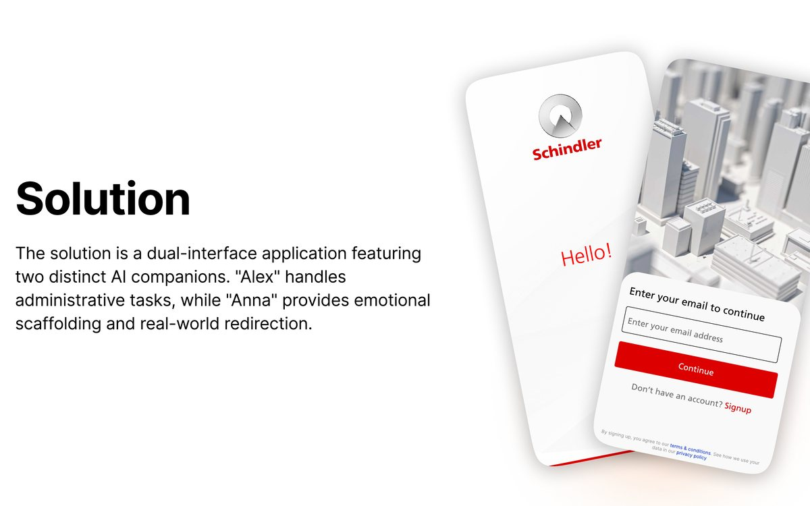
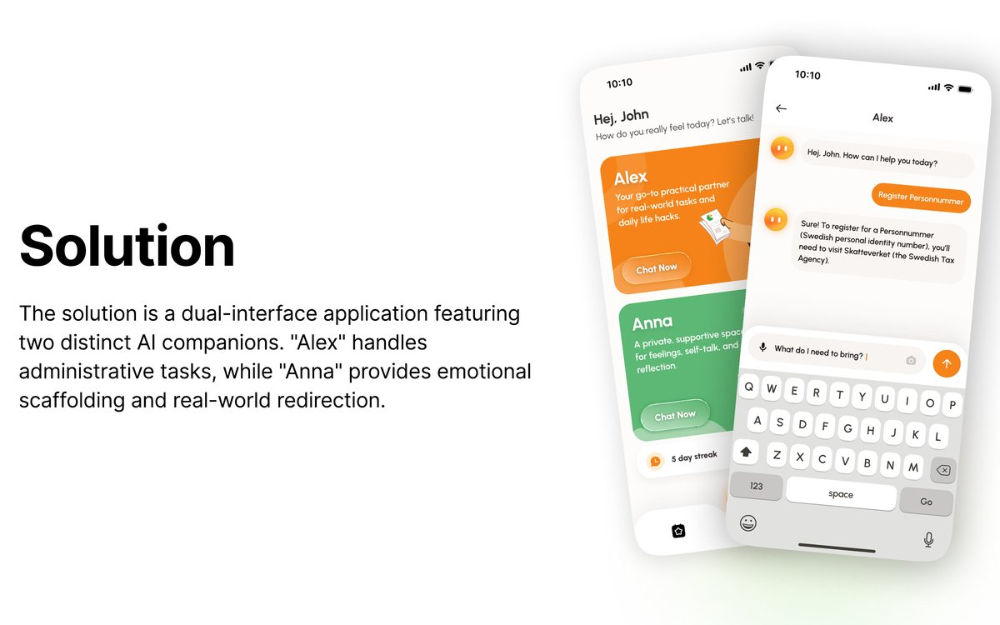
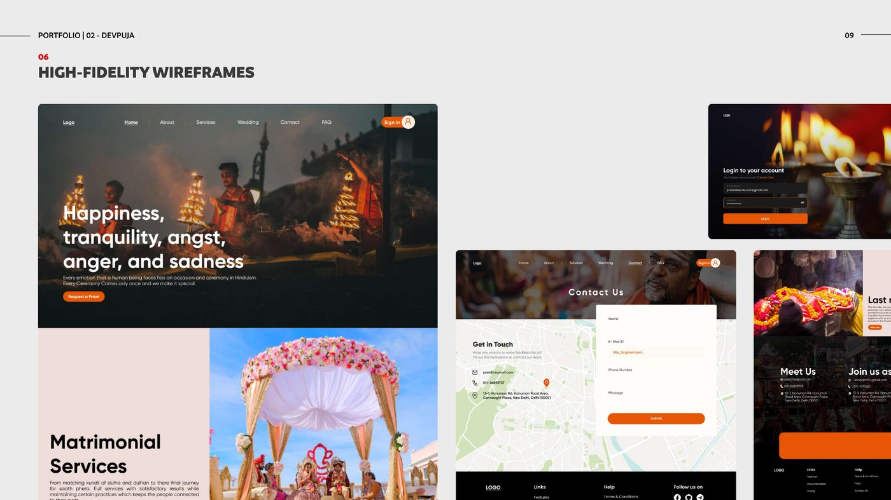
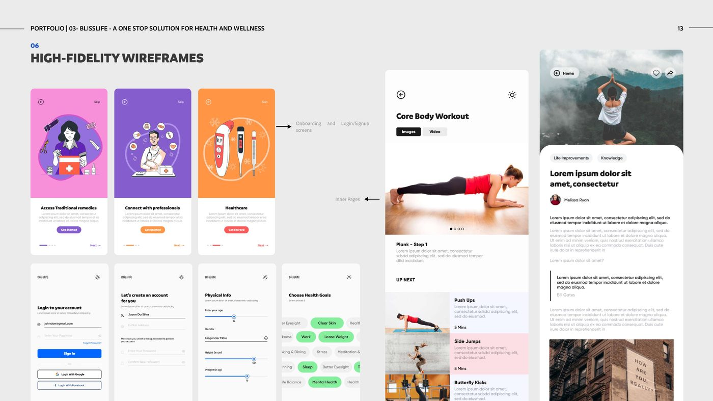

Mobile App · UX/UI
Schindler One
A real-time tracking app giving lift-installation customers full visibility into project status, milestones, and service — replacing scattered calls and emails with one clear place.

Selected work 🗂️
A real-time tracking app giving lift-installation customers full visibility into project status, milestones, and service — replacing scattered calls and emails with one clear place.

A dual-interface AI app supporting international students emotionally and administratively — designed to bridge support gaps without fostering unhealthy reliance on technology.

A service design for a natural museum — bridging physical exhibits and digital experiences through a frictionless web game, an AI-Lens app, and a staff portal.

A booking platform that simplifies finding verified pandits for religious ceremonies — bridging tradition and modern convenience with transparent pricing and ritual-specific guidance.

A one-stop health & wellness app combining diet plans, workouts, practitioner appointments, and e-commerce — so users stop juggling multiple apps to reach a single goal.

More on the way ✦
My favorite tools 🛠️
Ways of working 💡
I run interviews, build empathy maps and personas, and follow the data to find what works — grounding design in real user needs before a single screen exists.
From user journeys to full flows, I organize complex products into clear paths people can actually follow.
I turn flows into low- and high-fidelity wireframes and interactive prototypes to gather feedback early and validate decisions before build.
Great UX still needs polished visuals. I build typographic systems, color, and components that make the research show up as usable, refined interfaces.
I create reusable type, color, and icon libraries that keep products consistent and scalable as they grow.
I bring positive energy to teams and communicate design decisions clearly across research, product, and engineering.
I'm a UX and product designer who cares about turning messy, real-world problems into experiences people find obvious. My process runs the full arc — user research, empathy mapping, information architecture, and high-fidelity UI.
Across projects — from real-time tracking for Schindler, to an ethical AI companion for international students, to a museum service design — I've worked for very different audiences, always starting from what the user actually needs.
If you've got a project in mind, don't hesitate to reach out.
Send me a message →